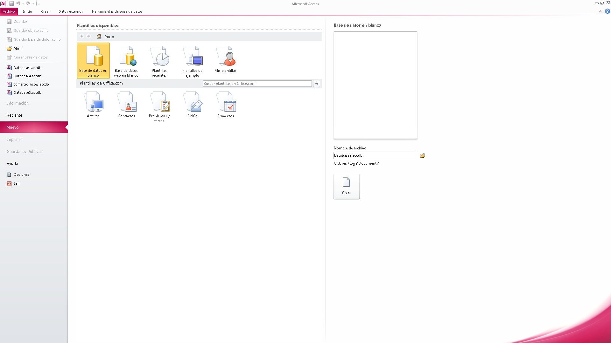

Una base de datos puede contener más de una tabla. Por ejemplo, un sistema de seguimiento de inventario que usa tres tablas no son tres bases de datos, sino una base de datos que contiene tres tablas. Salvo que haya sido específicamente diseñada para usar datos o códigos de otro origen, una base de datos de Access almacena sus tablas en un solo archivo, junto con otros objetos como formularios, informes, macros y módulos. Las bases de datos creadas en el formato Access 2007 (que también usan Access 2016, Access 2013 y Access 2010) tienen la extensión de archivo .accdb y las bases de datos creadas en formatos anteriores de Access tienen la extensión de archivo .mdb. Puede usar Access 2016, Access 2013, Access 2010 o Access 2007 para crear archivos en formatos de archivo anteriores (por ejemplo, Access 2000 y Access 2002-2003).

Con Access, puede:
Agregar nuevos datos a una base de datos, como un nuevo artículo en un inventario.
-
Modificar datos existentes en la base de datos, por ejemplo, cambiar la ubicación actual de un artículo.
-
Eliminar información, por ejemplo, si un artículo se vende o se descarta.
-
Organizar y ver los datos de diferentes formas.